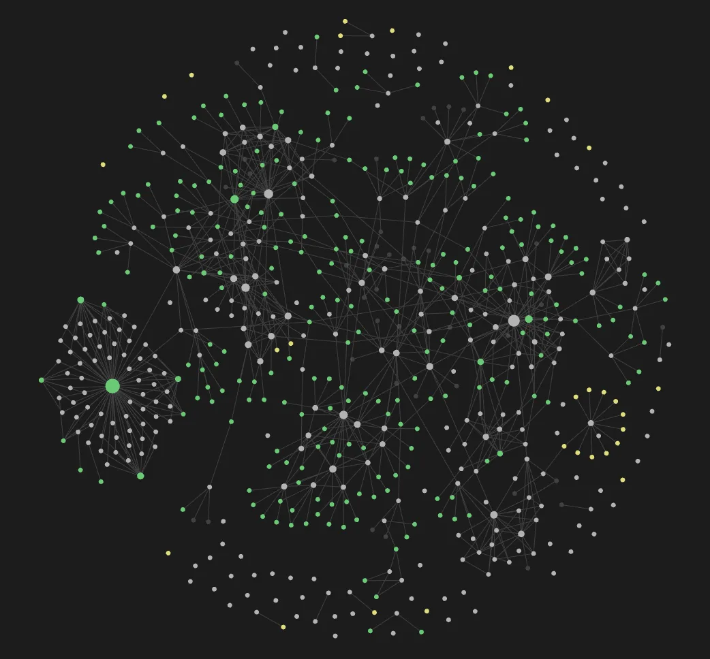

featured · knowledge graph
LLM · RAG · AGENTS
LifeOS — personal knowledge engine
Notes and chat messages become a Neo4j graph and Qdrant vectors. Hybrid retrieval explains why each result came back. Three tool-using agents and an MCP server sit on top.
0.955recall@5, hybrid (vs 0.897 vector)
3agents + MCP tools
32tests passing